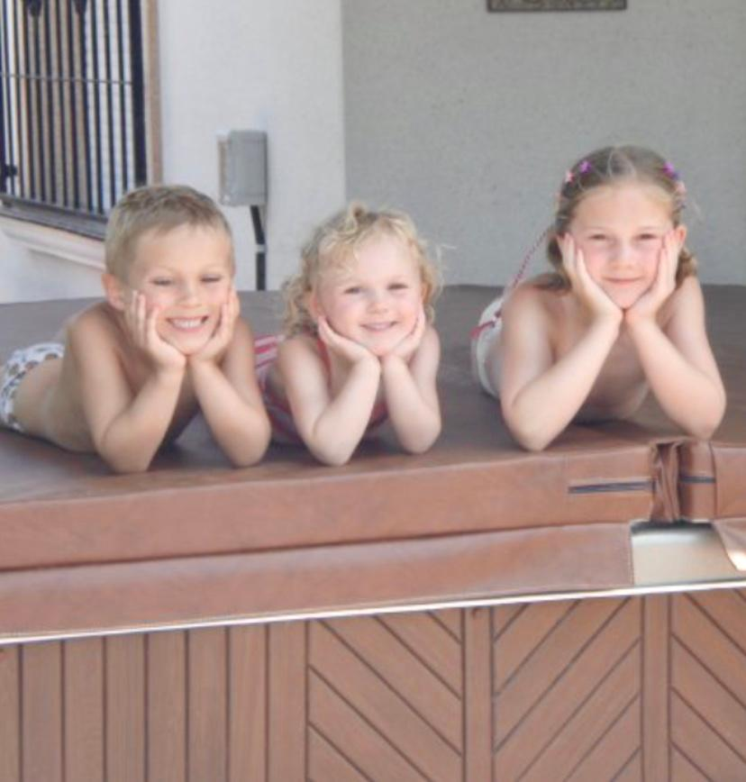

WHO AM I?
I was born on the 8th October 2000 in Essex, England and grew up in a village on the Essex-Hertfordshire border. I was fortunate enough to be an only child for three years before the uneventful birth of my younger brother then sister occured. We have a love-hate relationship, much like any siblings.With two younger siblings and my parents my house could be very busy at times with my only real escape being reading. Whether that be magazines, newspapers or childrens books you would always see my head stuck in something or another. This has stayed with me throughout the years to now, where at university I have the freedom to write my own pieces of work.
WHY DID I DECIDE TO CREATE A WEBSITE ABOUT FOOD?
Food is one of the few things that I am really passionate about. My grandma actually introduced me to cooking. As a young child my parenst were often at work so my grandma used to look after me. Round her house we used to make all kinds of dishes and treats. Furthermore, every year I would go to Spain with her and there we would make foods such as Paella and Gambas Pil Pil. Creating Tasty Typography gives me the oppotunity to combine my love of food and writing.
WHY AM I SO OBSESSED WITH BOOKS?
I have always been obsessed with reading and writing ever since I was a child. At school whilst my friends were playing mums and dads or digging in the sand pit I was in the corner, scribbling down make belief stories that I had envisioned.I used to walk along the street and make up stories about everyone who walked past me (which occasionally I still do now). My passion of reading has always stayed with me. Last year I read The Tattooist of Auschwitz which quickly became my favourite novel.The emotions through the language used within the book was none I've seen before. At the moment I am reading They Both Die At The End I love the characters development through the book so far.
WHAT ARE MY ASPIRATIONS FOR THE FUTURE?
When I was younger I always dreamt about being a professional gymnast. At the time I was a regional gymnast and had toured the UK in front of hundreds performing routines. Many of these tours are shown on Youtube. Unfortunetly due to a back injury I had to quit.
Now my focus is to work hard in order to get my degree and hopefully get a job in the Publishing or PR field. The dream would be to work abroad many in America or Australia since I have never been to these countries.